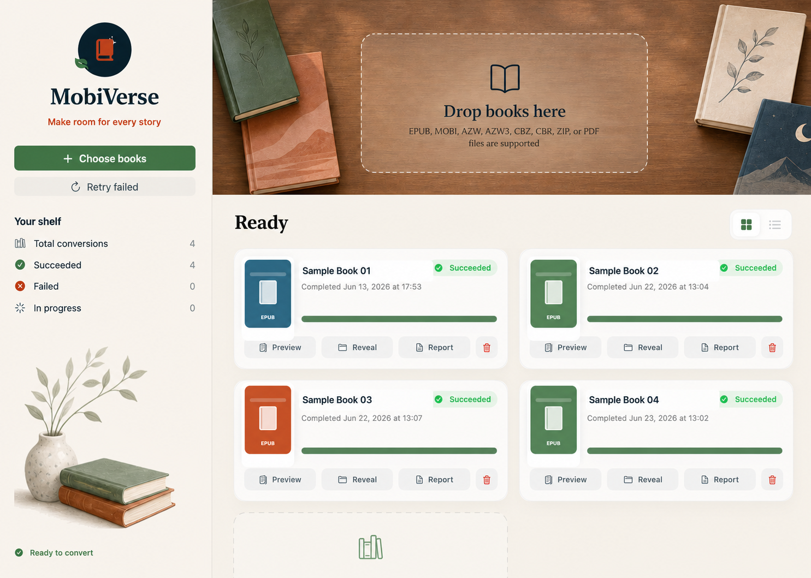
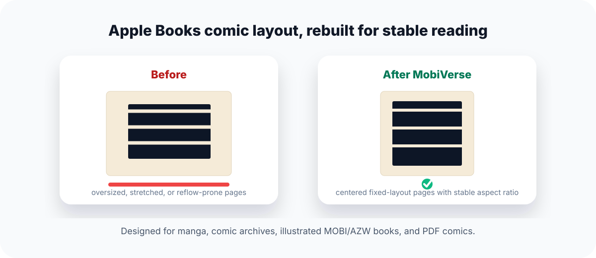

分析，而不是猜测
在本地识别文本书、漫画与不确定文件，展示置信度和依据，并把最终决定留给你。
从散落的格式，到统一的书架
一张安静的数字书桌
MobiVerse 把导入、分析、确认、转换、验证和阅读收进一个温暖的书架界面。你能看见进度，却不必被技术细节打扰。

在本地识别文本书、漫画与不确定文件，展示置信度和依据，并把最终决定留给你。
为文字书、漫画和 PDF 选择合适的路线；完成后直接进入分页阅读器，准确恢复阅读位置。
保留转换历史、真实封面和状态信息；界面不展示完整的本地文件路径。
三步，回到故事本身
一次导入一本或一整个书单。文件选择、拖放和浏览器下载共享同一条可靠流程。
检查类型、依据和阅读方向。自动化保持透明，所有判断都可以覆盖。
生成经过整理与验证的 EPUB 3，保存在原文件旁边，并立即进入精致分页预览。
为真正的阅读场景而做
从数百 MB 的漫画 PDF，到带日文注音的 Kindle 文字书，MobiVerse 不用一条粗糙的转换路线处理所有内容。
分类、转换、封面提取和预览都在你的电脑上完成。书籍不会被上传到服务器。
逐页生成固定布局 EPUB，保留原始视觉效果，并显示真实页数进度。
文字书水平翻页，漫画逐页适配窗口；主题、字号和阅读位置都被记住。
批量排队、失败重试、打开预览、显示输出、查看报告，一切都在一个书架里。
写入封面元数据、固定布局选项与自包含图像页，减少黑页、拉伸和翻页尺寸跳动。

你的书，只属于你
MobiVerse 从一开始就把隐私当作产品结构，而不是设置页里的一枚开关。
支持格式
受 DRM 保护或无法读取的文件会被清楚标记；MobiVerse 不移除 DRM。
按问题找到答案
当你需要离线转换旧 Kindle 文件、整理漫画压缩包，或修复 Apple Books 中的漫画页面时，MobiVerse 提供比通用转换流程更聚焦的本地方案。
FAQ
不会。分类、转换、封面提取与预览都在你的电脑上完成。
不能。MobiVerse 只处理未加 DRM 或系统能够正常读取的文件。
macOS 正式发行包内置所需转换组件，普通用户无需单独安装 Calibre。
默认保存在原文件旁边，并避免覆盖已有的同名 EPUB。